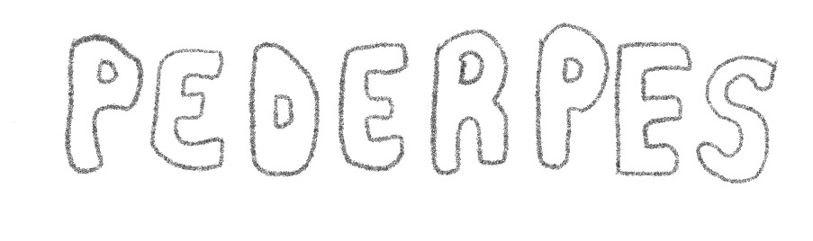
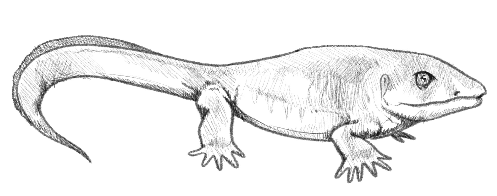
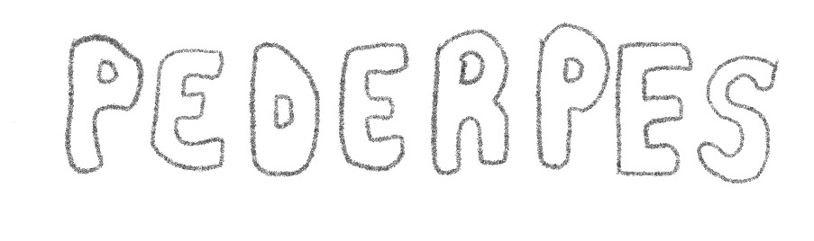
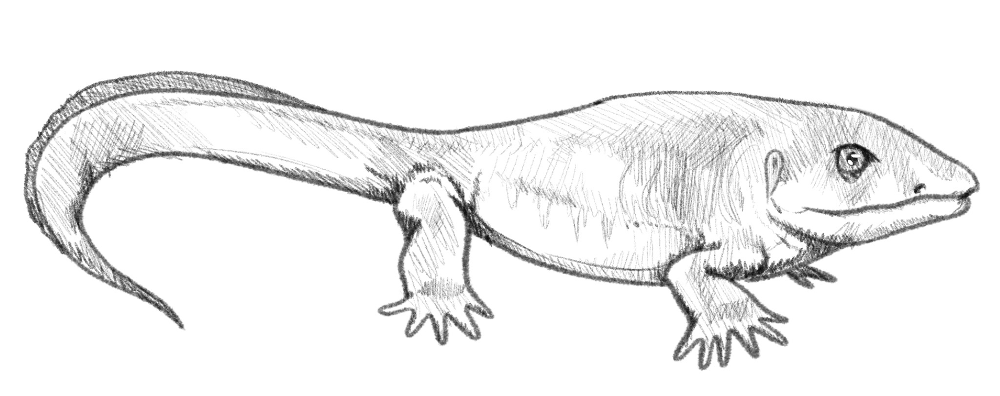

Pederpes’ fossil, located in Scotland, was at first, thought to be a lobe-finned fish, and later discovered to be one of the first tetrapods to live mostly on land. It’s also incredibly important as it would have existed during Romer’s Gap, during the Carboniferous period, allowing scientists to have evidence that the transition from aquatic to terrestrial tetrapods occurred in this time period. Pederpes has forward-facing feet, allowing more mobility on land, as well as a narrow skull, suggesting muscular breathing as opposed to a throat pouch, and aquatic suited ears, suggesting some time spent in water.